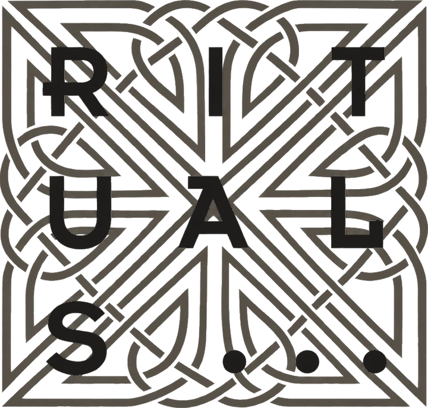
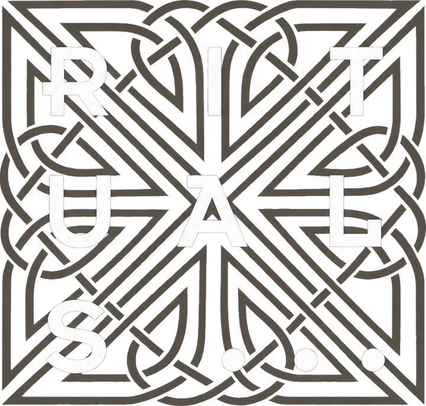
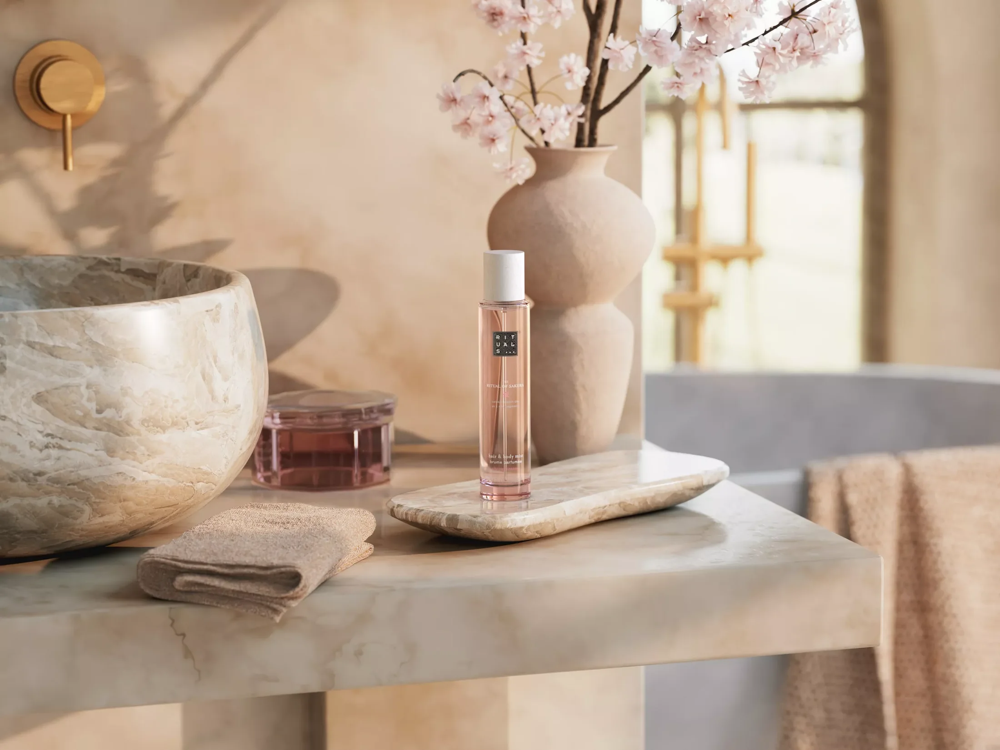

73,7 %de su audiencia de Instagram está en España
76,9 %tiene entre 18 y 34 años
59,1 % hombres40,9 % mujeres
Rituals × BIG · Baqueira Beret


Este diciembre, BIG Agency vuelve a la nieve con seis creadores de contenido, en colaboración con Baqueira Beret.
Queremos invitar a Rituals a sumarse al viaje: el cuidado y el descanso después de la jornada en pistas.
Visualizaciones orgánicas con solo 2 creadores
Toca cada reel para verlo en Instagram
Fuente: BIG Agency, edición Navidad 2025. Fecha de captura de los datos: a confirmar.

59,1 % hombres40,9 % mujeres
72,8 % hombres27,2 % mujeres
60,1 % hombres39,9 % mujeres
82,5 % hombres17,5 % mujeres
56,7 % hombres43,3 % mujeres
42,3 % hombres57,7 % mujeres
Fuente: estadísticas de audiencia de Instagram (y TikTok en el caso de Sofi Sea) facilitadas por los creadores a BIG Agency, noviembre de 2026. Seguidores de TikTok, y de Instagram de Jorge Ramón y Sofi Sea: dossier de BIG Agency. El +70 % del mediakit es la media de los seis ponderada por seguidores de Instagram (70,1 %). Fecha de captura: a confirmar.

Proponemos que Rituals viaje con los seis creadores y esté presente en el momento de cuidado y descanso, al terminar cada jornada en la nieve.
El viaje de diciembre, los seis creadores y la colaboración con Baqueira Beret.
Que Rituals forme parte del viaje en el después de pistas.
Productos, formatos de contenido, fechas y alcance.
Contacto Gonzalo Maass · BIG Agency